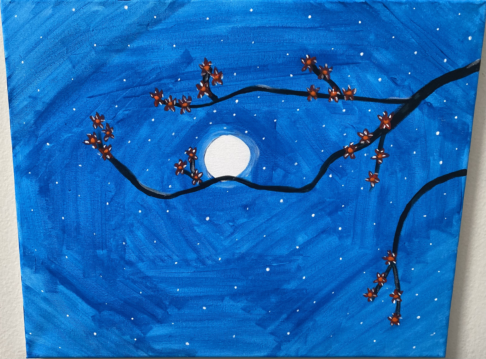
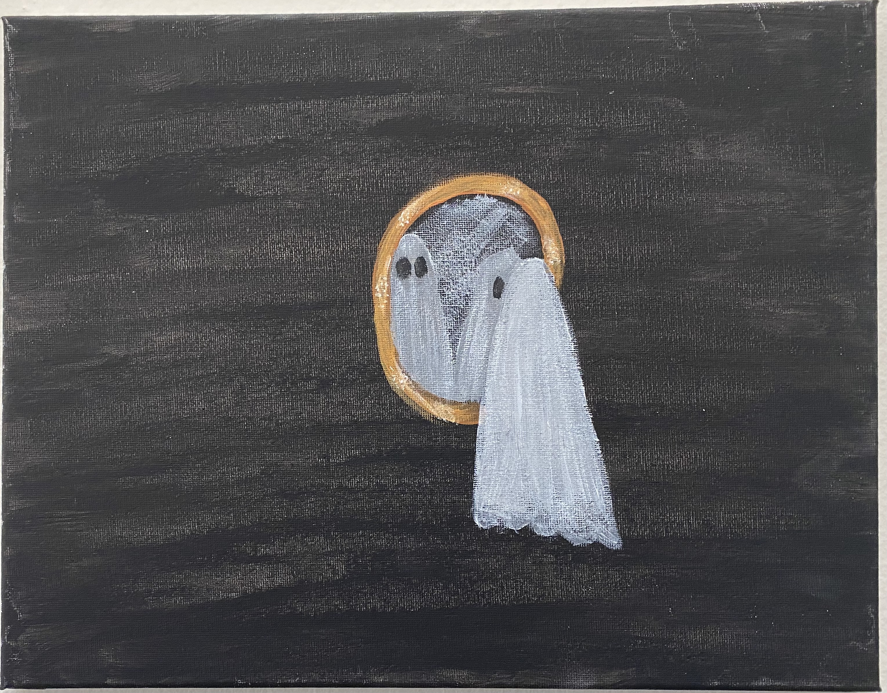
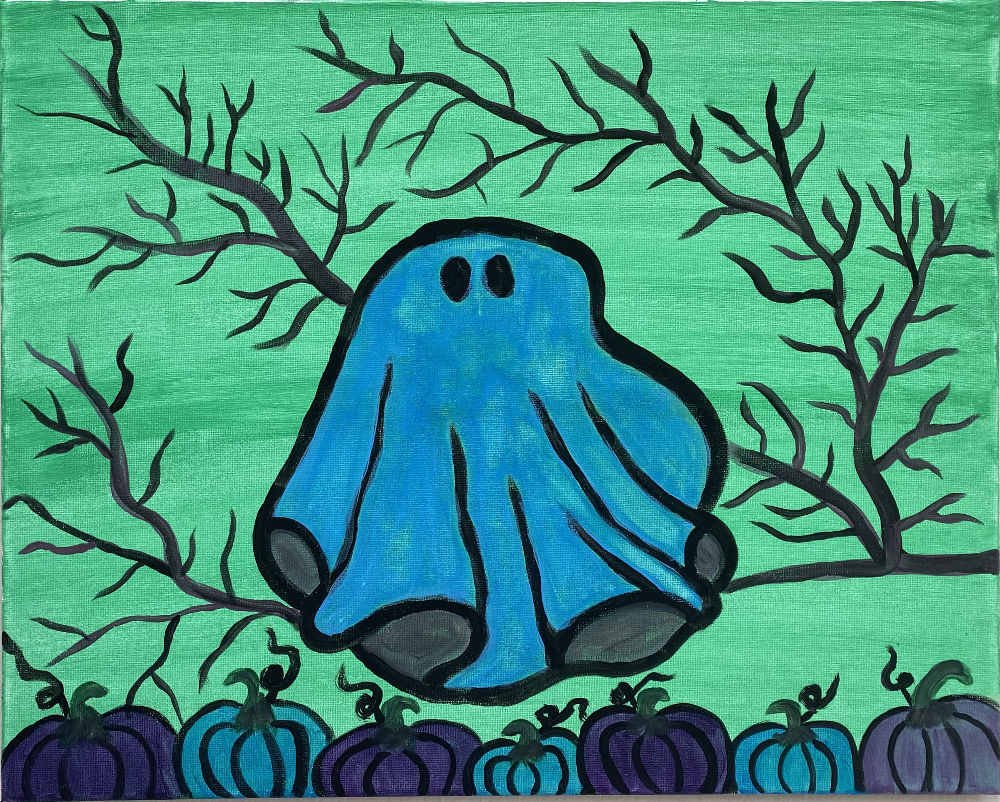
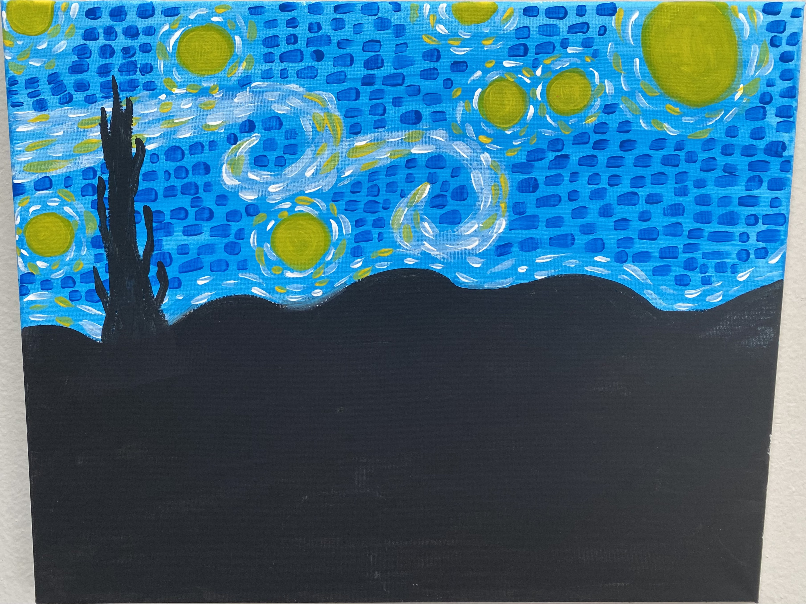
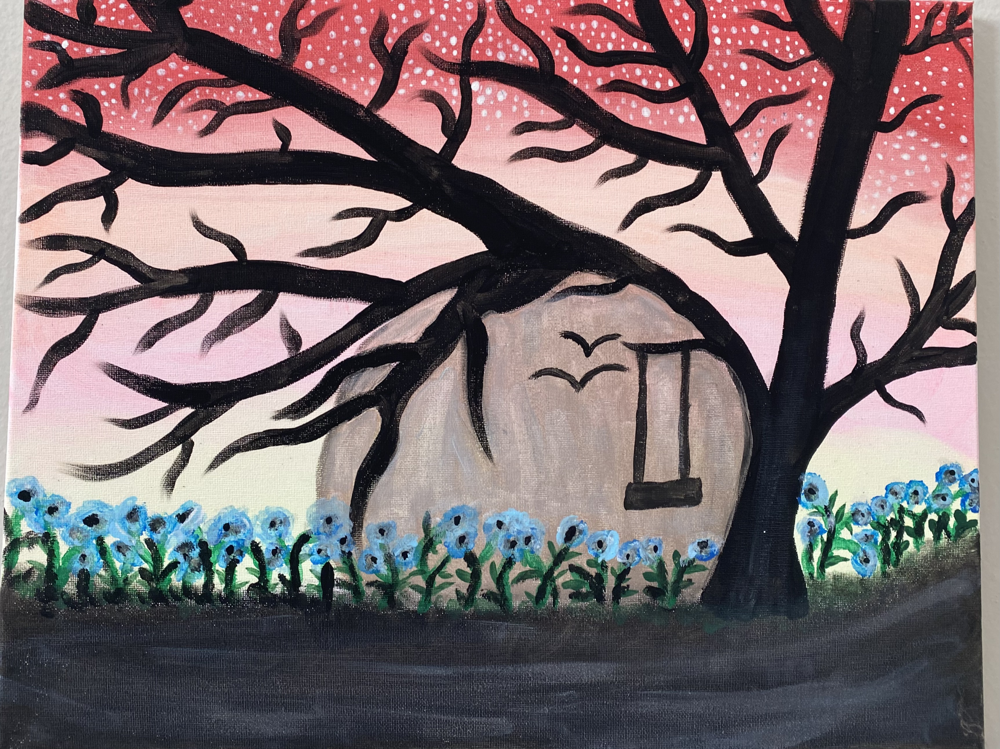
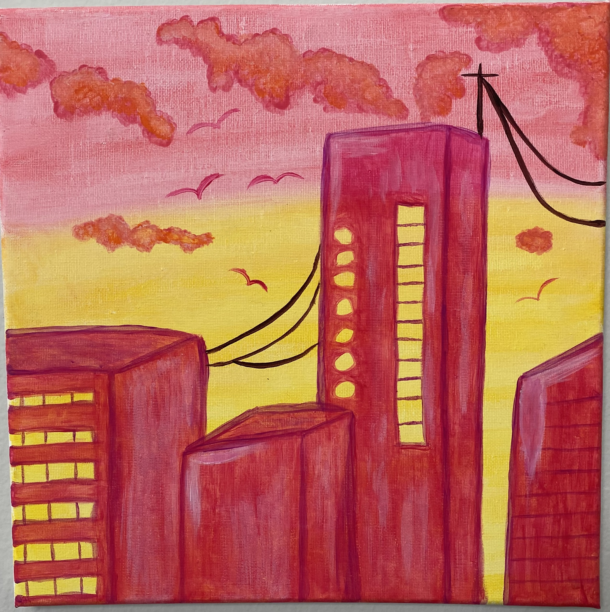

BioSite: Cydney Boyce-Abdullah
Art By Cyd

"Cherry Blossom Night" painted by Cydney Boyce-Abdullah

"Ghost's Reflection" painted by Cydney Boyce-Abdullah

"The Pumpkin Patch Ghost" painted by Cydney Boyce-Abdullah

"Starry Night (Cyd's rendition)" painted by Cydney Boyce-Abdullah

"The Swinging Tree" painted by Cydney Boyce-Abdullah

"Starburst City" painted by Cydney Boyce-Abdullah
 "Trippy Mushrooms" painted by Cydney Boyce-Abdullah
"Trippy Mushrooms" painted by Cydney Boyce-Abdullah